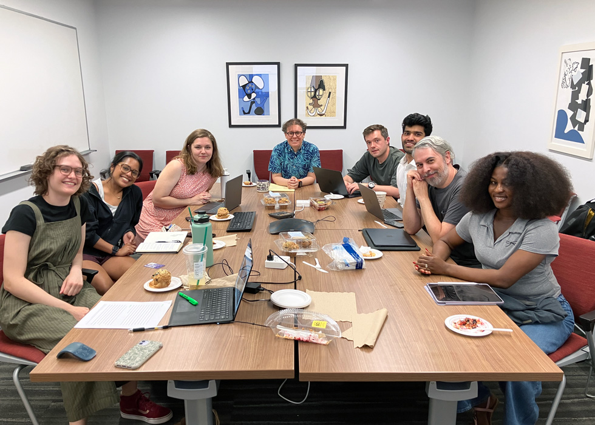

Spring Graduate Seminar
June 9, 2026
Wrapping up our quarter-long spring graduate seminar (ART_HIST 420 / MENA 411) with my students’ final research paper presentations over the last two weeks was a wonderful three-hour-block of classes. Ten weeks is never quite enough time in a graduate seminar to explore one research topic in depth. Still, I see this as a great chance for Ph.D. students to practice reading efficiently, taking notes, and writing well under time pressure. I asked them to write a 5,000-word final paper, but my main goal was to help them build strong writing habits. I asked them to practice free writing without stopping to type at the end of each meeting. I also encouraged them to spend 2-3 hours each week on their papers. For graduate students, finding three hours can be difficult with all their other duties—teaching, grading, attending seminars, reading, language study, leadership, and personal life. However, establishing a 2-3-hour timeslot per week is crucial for building a writing habit which would be rewarding for them in the long term. I believe that writing seminar papers helps students develop close reading skills, form a thesis and research questions, write arguments, and use strong sources. These papers also teach them how to read between the lines, prepare drafts, outlines, and mind maps, and understand the structure and elements of academic writing.
In my “Landscapes of Healing in the Premodern World” graduate seminar, my students read about medieval and early modern landscapes, built environments, gardens, hospitals, magic-medicinal objects, talismans, and amulets. Since most of my graduate students work on the modern and contemporary period, they found it interesting to read about a period they may not know well. I am sure they have learned a lot and stepped outside their own research fields to train as thinkers who can engage with a broader chronology and geography. I encouraged my students to think about the seminar’s theoretical readings on landscape, senses, healing, and therapy, and to apply these ideas to any time or place they wanted. Rather than restricting them to the premodern world, I asked them to work on papers that would support their exams, reading lists, dissertation chapters, or future publications. Their presentations covered topics from Yugoslav monuments to dragons and bronze door knockers in Cizre, healing shrines in pre-colonial Fanteland, the Hospices de Beaune in France, North American land art, and water therapy in South Africa. In our last class, we celebrated the end of the spring quarter with blueberry muffins and cranberry pie. Now, my students are preparing to travel for summer research, language study, and reading lists. Over the next several days, I look forward to reading their final papers with my coffee and offering feedback and suggestions, which is one of the most rewarding and joyful aspects of my teaching philosophy.
